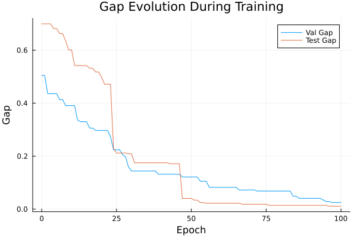
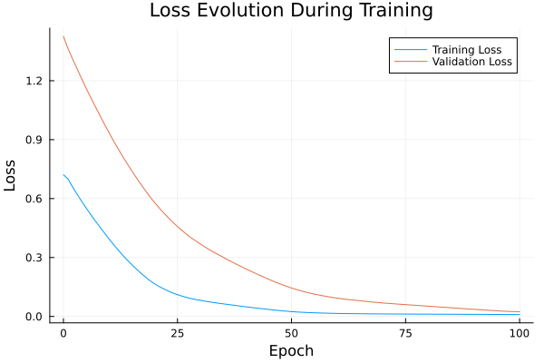

Basic Tutorial: Training with FYL on Argmax Benchmark
This tutorial demonstrates the basic workflow for training a policy using the Perturbed Fenchel-Young Loss algorithm.
Setup
using DecisionFocusedLearningAlgorithms
using DecisionFocusedLearningBenchmarks
using MLUtils: splitobs
using PlotsCreate Benchmark and Data
b = ArgmaxBenchmark()
dataset = generate_dataset(b, 100)
train_data, val_data, test_data = splitobs(dataset; at=(0.3, 0.3, 0.4))(DecisionFocusedLearningBenchmarks.Utils.DataSample{@NamedTuple{}, @NamedTuple{}, Matrix{Float32}, Vector{Float32}, Vector{Float32}}[DataSample(x=Float32[-0.902411 0.723388 … -0.812468 1.12599; -0.000538594 0.644781 … 1.50647 -0.605586; … ; 1.05387 -0.206777 … -0.629047 1.56782; -0.25654 0.755044 … 0.847955 -0.154879], θ=Float32[-0.228341, -0.751969, 0.225067, -0.567354, 0.497868, 0.0819399, 0.20252, -0.610028, -0.69645, -0.551235], y=Float32[0.0, 0.0, 0.0, 0.0, 1.0, 0.0, 0.0, 0.0, 0.0, 0.0]), DataSample(x=Float32[0.184245 0.6446 … 0.167833 0.899651; 0.834432 0.411259 … -0.288859 0.355702; … ; 1.2208 -0.5316 … -0.0046965 0.378332; -0.00235242 -0.0600313 … -1.25969 -0.802637], θ=Float32[-0.911699, -0.327356, 1.66655, -0.52893, -1.21047, -1.22199, -1.22053, -0.577753, 0.184216, -0.605251], y=Float32[0.0, 0.0, 1.0, 0.0, 0.0, 0.0, 0.0, 0.0, 0.0, 0.0]), DataSample(x=Float32[-0.696732 1.73284 … 1.16193 0.0311947; 0.834329 0.951136 … 1.78684 -2.77001; … ; -2.04684 -2.55907 … -0.201282 -0.909633; 0.291799 0.343126 … 1.03838 -0.605454], θ=Float32[0.485749, -0.582986, 0.160401, 0.977302, -1.0302, -0.125789, 0.478097, -0.319065, -1.34374, 1.86522], y=Float32[0.0, 0.0, 0.0, 0.0, 0.0, 0.0, 0.0, 0.0, 0.0, 1.0]), DataSample(x=Float32[-0.895422 0.00525332 … -0.184476 -0.508614; -1.32488 -0.501518 … -0.703916 -0.232134; … ; -1.89501 0.688295 … -0.0248782 0.370785; -0.0819269 -0.147003 … 0.11839 -0.250983], θ=Float32[1.66861, 0.120689, -1.21206, 0.601081, 0.21887, 0.110974, -0.147671, -1.15406, 0.513004, -0.100689], y=Float32[1.0, 0.0, 0.0, 0.0, 0.0, 0.0, 0.0, 0.0, 0.0, 0.0]), DataSample(x=Float32[-0.211289 0.0858961 … -1.39831 0.646702; 1.48692 -0.0814444 … -0.717176 0.409545; … ; -0.951508 0.452397 … -0.982835 1.56884; -1.30257 -0.172376 … 2.01386 0.137196], θ=Float32[-0.284019, -0.219233, -0.672737, 0.0713879, 2.19303, -1.39292, -0.269406, 0.544613, 0.741582, -0.815847], y=Float32[0.0, 0.0, 0.0, 0.0, 1.0, 0.0, 0.0, 0.0, 0.0, 0.0]), DataSample(x=Float32[1.07799 -0.0282468 … -0.447788 -0.183435; -0.752919 -0.325364 … -0.0403521 -0.0376769; … ; -2.30311 1.1023 … -0.675619 0.197948; -0.0882287 0.148123 … -1.44258 -1.00662], θ=Float32[0.715308, -0.0378118, -1.00007, 0.0117878, 0.229156, -0.16081, -0.693497, 0.024565, 0.662596, 0.122155], y=Float32[1.0, 0.0, 0.0, 0.0, 0.0, 0.0, 0.0, 0.0, 0.0, 0.0]), DataSample(x=Float32[-1.03631 1.19662 … 0.654898 0.699077; -0.794197 -0.612232 … -1.02052 0.997923; … ; -0.863929 0.115254 … -1.53486 1.06508; -0.0356654 0.272633 … 0.800004 0.0314902], θ=Float32[0.934336, -0.483638, 0.489932, -0.339035, -0.510075, -0.347135, -0.170403, 0.166219, 0.762183, -1.11839], y=Float32[1.0, 0.0, 0.0, 0.0, 0.0, 0.0, 0.0, 0.0, 0.0, 0.0]), DataSample(x=Float32[-1.14914 -0.5272 … -1.69562 -0.548328; 1.40382 -0.346219 … -1.42828 -3.53848; … ; -0.0757828 -0.752108 … 0.331317 -0.841453; -0.550539 -1.05148 … -1.29301 -0.263238], θ=Float32[-0.0376407, 0.745056, -0.00691017, -0.702939, 0.832343, 0.882464, 1.02381, -0.00905467, 1.12356, 2.05613], y=Float32[0.0, 0.0, 0.0, 0.0, 0.0, 0.0, 0.0, 0.0, 0.0, 1.0]), DataSample(x=Float32[1.31839 -0.437651 … 2.10926 0.366782; 0.712002 -0.818809 … 2.84206 -0.219411; … ; -0.305658 0.154003 … 0.0509167 -1.08423; -0.012315 0.540462 … -0.79125 0.641022], θ=Float32[-0.907191, 0.815958, 1.25831, 0.822075, 0.387807, 0.372479, -0.204137, -0.309731, -1.94298, 0.551257], y=Float32[0.0, 0.0, 1.0, 0.0, 0.0, 0.0, 0.0, 0.0, 0.0, 0.0]), DataSample(x=Float32[0.677234 1.18423 … -1.84236 0.176662; -1.35818 1.58475 … 0.120286 -1.32685; … ; 1.61449 0.355577 … -1.11927 0.445087; 1.27845 2.34611 … -0.440865 0.83641], θ=Float32[-0.508332, -1.50895, 0.924565, 1.36201, 0.0293593, 0.26682, 0.101871, 0.787197, 0.788379, 0.617196], y=Float32[0.0, 0.0, 0.0, 1.0, 0.0, 0.0, 0.0, 0.0, 0.0, 0.0]) … DataSample(x=Float32[0.452253 -1.52514 … -0.170091 -0.360295; -0.98856 -0.141998 … 0.754987 0.943303; … ; 1.51857 -0.415871 … -1.03527 0.714397; -0.539723 1.29926 … -0.920948 1.21665], θ=Float32[-0.0393419, -0.0276307, -0.907363, 0.135381, -1.56115, 0.258247, 0.5889, -0.827071, -0.0669623, -0.457472], y=Float32[0.0, 0.0, 0.0, 0.0, 0.0, 0.0, 1.0, 0.0, 0.0, 0.0]), DataSample(x=Float32[-0.439081 0.116194 … -1.02582 -0.658025; -0.0579878 0.198185 … 2.26523 -2.19742; … ; 0.257318 -0.648322 … -0.178783 -0.208521; -1.50464 0.65234 … 1.33333 -0.323945], θ=Float32[0.365236, -0.282088, 0.222654, -0.13576, -0.375576, 1.59101, -0.257671, -0.531485, -0.482334, 1.3029], y=Float32[0.0, 0.0, 0.0, 0.0, 0.0, 1.0, 0.0, 0.0, 0.0, 0.0]), DataSample(x=Float32[-0.439863 -1.2888 … -0.653423 0.786379; -0.159373 -0.0479941 … 0.670989 1.10439; … ; -0.728141 -0.604611 … -0.10534 0.864111; -0.903545 0.542529 … -1.10395 -1.07232], θ=Float32[0.627135, 0.653427, 0.232964, 0.127577, 0.789344, -0.733441, 0.712518, 0.361928, -0.154528, -1.38552], y=Float32[0.0, 0.0, 0.0, 0.0, 1.0, 0.0, 0.0, 0.0, 0.0, 0.0]), DataSample(x=Float32[0.827612 -0.819943 … 0.920495 0.694332; 0.504158 -1.00959 … 0.951591 -0.785146; … ; 0.130015 0.832042 … 0.443797 -0.292352; 0.330144 1.74198 … 2.31615 0.0384825], θ=Float32[-0.244192, 0.0676924, -0.307091, 0.247793, 0.275307, 2.13719, 0.966014, -0.521372, -1.14917, 0.430376], y=Float32[0.0, 0.0, 0.0, 0.0, 0.0, 1.0, 0.0, 0.0, 0.0, 0.0]), DataSample(x=Float32[0.326356 -0.75833 … 1.71576 -0.862033; 0.812058 0.783883 … -0.580562 -0.233447; … ; -1.23183 1.99531 … 0.932659 -1.37061; 1.00161 0.465076 … -0.0885818 -0.759524], θ=Float32[0.122873, -1.42353, -0.631855, 0.963244, 0.294888, -0.0785748, -0.678802, 0.738775, -0.811078, 0.557353], y=Float32[0.0, 0.0, 0.0, 1.0, 0.0, 0.0, 0.0, 0.0, 0.0, 0.0]), DataSample(x=Float32[-0.764548 -0.0149991 … 0.210108 -0.0551662; 1.11549 0.736266 … 0.557274 0.603996; … ; -0.926679 -0.105027 … 0.361059 -0.0742097; -0.628185 0.518518 … 1.44682 -0.146154], θ=Float32[0.0697051, -0.685369, 0.716011, 1.11759, -0.702539, 0.213265, 0.784834, -0.365422, -0.669784, -0.438971], y=Float32[0.0, 0.0, 0.0, 1.0, 0.0, 0.0, 0.0, 0.0, 0.0, 0.0]), DataSample(x=Float32[0.122542 0.00557568 … -0.501581 0.305283; -0.340113 -0.05531 … -1.22277 1.95028; … ; -0.543044 -1.07068 … 0.156812 -0.0134087; -0.0611941 -0.819916 … 0.959965 -1.26576], θ=Float32[-0.0146008, 0.626794, 0.985033, 0.290544, 0.869203, 0.518483, 0.210467, -0.197126, 0.74373, -0.899741], y=Float32[0.0, 0.0, 1.0, 0.0, 0.0, 0.0, 0.0, 0.0, 0.0, 0.0]), DataSample(x=Float32[0.547319 1.05291 … -0.52073 -1.10893; 1.20138 0.412324 … -1.6603 0.635681; … ; -0.0734472 -0.189125 … -1.18463 -0.441338; 1.48396 0.710946 … -0.391829 -1.14409], θ=Float32[-0.820948, -0.698126, -0.33908, 0.30315, 0.488307, 1.17715, 0.0303577, -0.843539, 1.44153, 0.435762], y=Float32[0.0, 0.0, 0.0, 0.0, 0.0, 0.0, 0.0, 0.0, 1.0, 0.0]), DataSample(x=Float32[1.01545 -0.659515 … -0.533975 -0.0163609; -0.608164 -0.626215 … 2.89262 -0.676819; … ; -0.582273 -0.835183 … -0.40895 -0.166169; 1.74094 -0.176537 … -0.569887 -0.164861], θ=Float32[0.31128, 1.01787, -0.210082, -0.215638, -0.675222, -0.563129, -0.0858622, 0.0705941, -1.28552, 0.29352], y=Float32[0.0, 1.0, 0.0, 0.0, 0.0, 0.0, 0.0, 0.0, 0.0, 0.0]), DataSample(x=Float32[-1.12446 1.7725 … -1.40691 -0.559872; 0.296908 0.264183 … 1.60617 0.0296719; … ; 0.0370541 0.501017 … -0.0826165 0.202884; -0.384127 -1.04218 … -1.31697 0.150856], θ=Float32[0.241366, -0.731804, -0.342581, -0.0356863, 0.0723288, -0.41935, -0.0981326, 0.948156, 0.00101117, -0.159755], y=Float32[0.0, 0.0, 0.0, 0.0, 0.0, 0.0, 0.0, 1.0, 0.0, 0.0])], DecisionFocusedLearningBenchmarks.Utils.DataSample{@NamedTuple{}, @NamedTuple{}, Matrix{Float32}, Vector{Float32}, Vector{Float32}}[DataSample(x=Float32[0.871451 -0.60574 … -0.503655 0.436843; 0.112364 -0.313682 … 1.30771 -0.660091; … ; 0.98817 1.20578 … 0.379305 -1.0216; 1.51364 -1.42116 … -0.244569 0.243825], θ=Float32[-0.688409, 0.305708, -0.251455, -0.240039, -0.93894, 0.93556, 0.284394, 0.967052, -0.533772, 0.163088], y=Float32[0.0, 0.0, 0.0, 0.0, 0.0, 0.0, 0.0, 1.0, 0.0, 0.0]), DataSample(x=Float32[-0.457079 0.552471 … -2.91449 0.22609; -0.242742 1.68017 … 0.63431 -1.19779; … ; 0.944852 -0.983115 … 2.13918 -0.976491; 0.925714 -0.249869 … -1.60298 1.1361], θ=Float32[-0.236035, -0.863363, 0.692046, -0.0769539, -0.0208198, -0.450428, -0.571616, 0.802511, -0.154506, 0.709172], y=Float32[0.0, 0.0, 0.0, 0.0, 0.0, 0.0, 0.0, 1.0, 0.0, 0.0]), DataSample(x=Float32[1.19351 -0.437416 … 1.73296 -0.831015; -0.934908 -0.463719 … -0.435683 0.716501; … ; 0.240727 -0.161981 … 0.556406 -0.426763; -2.2682 0.375851 … -0.12223 -0.267538], θ=Float32[-0.0655604, 0.130214, 0.904985, 0.669672, -1.48665, -0.348478, -0.44058, -0.347841, -0.443679, 0.0637962], y=Float32[0.0, 0.0, 1.0, 0.0, 0.0, 0.0, 0.0, 0.0, 0.0, 0.0]), DataSample(x=Float32[-0.247627 -1.67813 … 0.432294 0.599678; 1.01876 0.087336 … -1.22973 -1.57439; … ; 0.246908 -1.0244 … 0.700113 -1.20652; 1.73798 -1.74578 … -1.3433 0.0920674], θ=Float32[-0.865593, 0.942715, -0.117281, -0.0317648, -0.426358, 1.02516, -0.329241, -0.109766, 0.109137, 1.00992], y=Float32[0.0, 0.0, 0.0, 0.0, 0.0, 1.0, 0.0, 0.0, 0.0, 0.0]), DataSample(x=Float32[-0.760582 -0.958295 … -0.0697369 -0.303504; 1.49683 -1.15501 … -0.693733 0.276622; … ; 0.409551 0.153266 … 0.348291 1.13373; -1.55707 0.824861 … 1.22054 -1.61313], θ=Float32[-0.478288, 0.736866, -0.250732, -0.975861, 0.307525, 0.08793, 0.198215, -0.753475, 0.275113, -0.0862802], y=Float32[0.0, 1.0, 0.0, 0.0, 0.0, 0.0, 0.0, 0.0, 0.0, 0.0]), DataSample(x=Float32[0.388427 0.0127757 … -0.164742 0.639319; 0.82661 0.654221 … -0.051307 2.66197; … ; -0.596068 1.21457 … -0.310027 2.4374; -0.353873 1.20782 … 0.64467 0.809143], θ=Float32[-0.454585, -1.19006, -0.983553, 0.51665, 0.0187113, 0.645854, 0.847468, -0.383058, 0.418665, -1.98406], y=Float32[0.0, 0.0, 0.0, 0.0, 0.0, 0.0, 1.0, 0.0, 0.0, 0.0]), DataSample(x=Float32[-0.19456 -0.587002 … -0.936035 -1.40854; -1.72927 1.36932 … -0.342167 0.00198865; … ; 1.39394 -1.70271 … 0.823688 1.57482; -1.43154 0.229466 … -1.28797 0.356105], θ=Float32[0.788124, -0.228533, 0.0971965, -0.483665, -1.65602, -0.301267, 0.955968, 0.499592, 0.0210179, -0.19779], y=Float32[0.0, 0.0, 0.0, 0.0, 0.0, 0.0, 1.0, 0.0, 0.0, 0.0]), DataSample(x=Float32[0.559538 0.137629 … -0.155154 0.681769; -1.50083 -0.200144 … -1.41498 -0.772418; … ; 0.805911 -0.790538 … 1.15371 1.21679; 1.094 -0.404758 … -0.938757 1.35399], θ=Float32[0.0803345, 0.0701998, -0.0982372, -0.0838152, -0.559879, 1.87679, 1.05079, -0.779615, 0.650884, -0.565659], y=Float32[0.0, 0.0, 0.0, 0.0, 0.0, 1.0, 0.0, 0.0, 0.0, 0.0]), DataSample(x=Float32[-1.25423 0.95304 … 2.69306 0.960429; -0.339161 -0.723742 … 1.52741 -0.817852; … ; 2.7382 -0.85917 … 0.662989 0.984477; 0.401614 0.947646 … -0.620105 -1.54371], θ=Float32[-0.398447, 0.315905, -0.26777, 0.100777, 1.06392, -0.764183, 0.321647, 0.114111, -1.73834, 0.0474584], y=Float32[0.0, 0.0, 0.0, 0.0, 1.0, 0.0, 0.0, 0.0, 0.0, 0.0]), DataSample(x=Float32[-1.2654 -1.87166 … -0.318271 1.4683; 0.932963 -0.73647 … 1.1845 -0.252878; … ; -0.251931 0.514446 … -0.887653 -0.540792; 0.0183754 0.318679 … -1.69036 -0.449386], θ=Float32[-0.272537, 0.767118, -0.38394, -0.537526, -1.222, 0.536637, -0.00159219, 0.145645, -0.104154, -0.0157237], y=Float32[0.0, 1.0, 0.0, 0.0, 0.0, 0.0, 0.0, 0.0, 0.0, 0.0]) … DataSample(x=Float32[-1.21738 0.867387 … -0.611315 1.05916; -0.209977 0.165084 … 1.2775 0.815086; … ; -0.524599 -0.363577 … -0.165784 0.739738; -0.0196953 -1.58393 … -1.34753 -0.515465], θ=Float32[0.88565, -0.460315, 0.641044, -0.399627, -0.123837, 0.244429, 0.928666, 1.34337, -0.367595, -0.982511], y=Float32[0.0, 0.0, 0.0, 0.0, 0.0, 0.0, 0.0, 1.0, 0.0, 0.0]), DataSample(x=Float32[0.269789 -1.43969 … 1.32642 1.48659; -0.0184373 -1.69426 … -0.710778 -0.663526; … ; -0.234989 1.37437 … 0.0290741 -2.23589; -0.726134 0.153046 … 0.194266 -1.74999], θ=Float32[-0.153019, 0.740848, 0.172587, -0.223751, -0.465831, 1.37399, -0.000633545, -0.0637122, -0.387138, 0.86643], y=Float32[0.0, 0.0, 0.0, 0.0, 0.0, 1.0, 0.0, 0.0, 0.0, 0.0]), DataSample(x=Float32[0.199632 -1.30969 … 0.392633 -0.775604; 0.566041 -0.286051 … 0.353772 -0.0149753; … ; -1.3614 -0.190543 … -1.28712 -0.0216668; 1.96513 0.623667 … 0.085609 -0.159665], θ=Float32[-0.104989, 0.662359, 0.142563, -0.316282, 0.236527, -0.411957, -0.620487, 0.481764, 0.172764, 0.299963], y=Float32[0.0, 1.0, 0.0, 0.0, 0.0, 0.0, 0.0, 0.0, 0.0, 0.0]), DataSample(x=Float32[-0.950181 0.911977 … 1.06798 0.769437; 0.671762 -0.882302 … 0.00163697 -1.16991; … ; -0.353243 2.36164 … -0.736453 0.296389; -0.61541 -0.370321 … 1.8078 -0.109142], θ=Float32[-0.168443, -0.592437, 1.20148, -0.284662, -0.558299, -0.625424, 0.0431732, 0.122876, -0.242279, 0.149516], y=Float32[0.0, 0.0, 1.0, 0.0, 0.0, 0.0, 0.0, 0.0, 0.0, 0.0]), DataSample(x=Float32[-0.149995 -0.806294 … -0.803971 0.492047; 0.439092 0.216156 … -0.862015 0.108008; … ; -1.31172 -0.470365 … 0.17556 -1.49047; -0.0138928 -0.255771 … -0.307895 0.0337398], θ=Float32[0.399742, 0.643275, 0.453519, 9.01455f-5, -1.08382, 0.330362, 0.203239, 0.0443758, 0.835128, 0.741366], y=Float32[0.0, 0.0, 0.0, 0.0, 0.0, 0.0, 0.0, 0.0, 1.0, 0.0]), DataSample(x=Float32[-1.30168 -0.143215 … 0.411974 -1.63373; -0.649761 1.05839 … 0.757767 -0.617738; … ; -1.71852 -1.11913 … -1.16512 0.616683; 0.461772 1.85859 … 1.7223 0.991567], θ=Float32[1.33578, -0.479483, -1.02792, 0.425988, -0.374346, -0.0247621, 1.15856, 0.879219, -0.174021, 0.422323], y=Float32[1.0, 0.0, 0.0, 0.0, 0.0, 0.0, 0.0, 0.0, 0.0, 0.0]), DataSample(x=Float32[0.314877 -1.00115 … 0.646541 -1.21449; 0.363614 1.30862 … -0.817673 -1.22944; … ; -0.775312 0.0695373 … 0.825832 1.61013; -1.48867 0.383299 … -0.932145 0.74212], θ=Float32[-0.100377, -0.260676, -0.881557, -1.10638, 0.63668, 1.3555, -0.177531, -0.719419, 0.379022, 0.423244], y=Float32[0.0, 0.0, 0.0, 0.0, 0.0, 1.0, 0.0, 0.0, 0.0, 0.0]), DataSample(x=Float32[0.60468 -0.333224 … 0.528638 -1.88907; 0.0470369 0.491907 … -0.720299 0.506373; … ; 1.21463 0.0390664 … 1.13384 -1.28159; -2.14701 -1.71148 … -1.49683 0.0776998], θ=Float32[-0.179469, -0.296553, 0.0339853, 0.779259, 0.957587, 0.108038, 0.0196186, -0.814161, 0.233383, 0.588202], y=Float32[0.0, 0.0, 0.0, 0.0, 1.0, 0.0, 0.0, 0.0, 0.0, 0.0]), DataSample(x=Float32[0.443439 -1.40523 … 1.70357 -0.179608; -1.14013 0.316123 … -1.80297 -0.354215; … ; 0.758877 -0.737122 … 1.50681 -0.570714; -0.391487 -0.941173 … 0.28676 0.839259], θ=Float32[0.387198, 0.656636, -0.599775, -0.448456, -0.5908, -0.210878, -1.36114, 0.498823, 0.0136482, 0.146204], y=Float32[0.0, 1.0, 0.0, 0.0, 0.0, 0.0, 0.0, 0.0, 0.0, 0.0]), DataSample(x=Float32[-0.0269876 1.37815 … 0.977 -0.377028; -0.122616 -1.41086 … 0.755023 -0.651753; … ; 0.768866 2.27942 … 0.422964 3.54387; -1.17875 0.335946 … -0.511995 0.310471], θ=Float32[-0.141781, -0.180765, 0.626823, 0.167881, 1.10865, 0.987823, -1.35861, 0.167388, -0.97271, -0.693399], y=Float32[0.0, 0.0, 0.0, 0.0, 1.0, 0.0, 0.0, 0.0, 0.0, 0.0])], DecisionFocusedLearningBenchmarks.Utils.DataSample{@NamedTuple{}, @NamedTuple{}, Matrix{Float32}, Vector{Float32}, Vector{Float32}}[DataSample(x=Float32[-0.880889 -0.318312 … 1.34609 -1.74771; -0.93243 -0.522112 … -0.663137 -1.56647; … ; 1.30295 -0.171313 … -0.156633 -1.75965; -0.598384 1.5337 … -0.590465 0.74788], θ=Float32[0.27271, 0.235585, -0.938639, -0.759544, -0.123596, -0.0641778, -0.919874, -1.36277, -0.360146, 2.0493], y=Float32[0.0, 0.0, 0.0, 0.0, 0.0, 0.0, 0.0, 0.0, 0.0, 1.0]), DataSample(x=Float32[1.36343 -0.286233 … -0.43246 1.0029; 0.278489 -0.772817 … 0.345095 -1.21889; … ; 0.274877 -0.105391 … -0.606821 2.13544; -1.15509 -0.354135 … -1.02482 0.358729], θ=Float32[-0.57912, 0.109255, 1.09619, -0.462107, 0.321089, 0.0368504, -0.910226, 0.770115, 0.251521, -0.539819], y=Float32[0.0, 0.0, 1.0, 0.0, 0.0, 0.0, 0.0, 0.0, 0.0, 0.0]), DataSample(x=Float32[-1.12317 -0.736801 … -0.357126 0.299587; -0.671348 -1.66474 … -0.474939 -0.394823; … ; 0.766208 0.129737 … -0.53743 -0.168398; -0.271612 1.8046 … -1.96329 -1.0901], θ=Float32[0.224807, 0.765582, -0.126212, -0.663346, 0.080052, 0.616613, -0.00131338, -0.63395, 0.663702, -0.0197024], y=Float32[0.0, 1.0, 0.0, 0.0, 0.0, 0.0, 0.0, 0.0, 0.0, 0.0]), DataSample(x=Float32[-1.44817 1.16811 … 0.791638 0.776929; -0.136891 -0.649692 … 0.390502 0.0201256; … ; -0.0290766 -0.816203 … 0.871963 -1.62149; 1.3394 -1.69603 … -1.02783 1.08956], θ=Float32[0.227348, 0.494769, -0.187251, -0.947073, 0.314427, 2.11665, -0.493483, -0.463838, -0.523425, 0.162651], y=Float32[0.0, 0.0, 0.0, 0.0, 0.0, 1.0, 0.0, 0.0, 0.0, 0.0]), DataSample(x=Float32[-0.26303 0.0808822 … 0.118037 0.170681; 1.67518 0.00203531 … 1.47176 -1.79551; … ; 1.13721 0.286814 … 1.38464 -0.911533; -0.454583 -0.241611 … 0.55534 0.969625], θ=Float32[-1.27842, -0.171852, -1.17002, -0.28666, 0.19681, 0.0109384, 0.321671, 0.171263, -1.37464, 1.1233], y=Float32[0.0, 0.0, 0.0, 0.0, 0.0, 0.0, 0.0, 0.0, 0.0, 1.0]), DataSample(x=Float32[1.18589 3.07494 … -2.20088 0.141708; -0.718417 -0.509402 … 0.996576 0.253085; … ; 0.245879 2.11809 … 0.511313 0.6754; 0.855304 0.841499 … -0.30452 -0.483661], θ=Float32[-0.239143, -1.86253, -0.590801, 1.00536, 0.545105, 0.430356, 1.6789, -0.423143, 0.0199074, -0.406265], y=Float32[0.0, 0.0, 0.0, 0.0, 0.0, 0.0, 1.0, 0.0, 0.0, 0.0]), DataSample(x=Float32[-0.964968 0.0388672 … -0.695283 1.27699; -1.74106 0.102498 … -0.404191 -1.10033; … ; -1.1248 -0.15683 … 0.480393 -0.610845; -1.22081 0.324848 … -0.55379 1.21885], θ=Float32[1.98909, -0.230937, -0.10652, -0.236043, 0.839481, -0.246246, 0.0721269, 0.681731, 0.265498, -0.04175], y=Float32[1.0, 0.0, 0.0, 0.0, 0.0, 0.0, 0.0, 0.0, 0.0, 0.0]), DataSample(x=Float32[0.603285 -1.30798 … 0.264228 1.31164; 0.747322 -1.89214 … 0.356672 -1.04887; … ; -0.282252 0.1189 … -2.34289 0.430764; -0.0368753 0.175952 … -0.151588 0.42662], θ=Float32[-0.460115, 1.30953, 0.256858, 0.486831, -0.87018, 0.133813, -1.05196, 1.25708, 0.538722, 0.121422], y=Float32[0.0, 1.0, 0.0, 0.0, 0.0, 0.0, 0.0, 0.0, 0.0, 0.0]), DataSample(x=Float32[-0.254797 0.139736 … 0.0462716 -0.0871037; -0.793556 -0.604764 … 0.953007 0.449571; … ; 1.45853 1.03448 … -0.907009 -0.894423; -0.0175743 0.882074 … 1.50497 -1.13245], θ=Float32[0.317496, -0.494538, -0.630927, 0.990592, -0.332446, -1.09139, -0.402459, -0.452615, -0.509216, 0.613974], y=Float32[0.0, 0.0, 0.0, 1.0, 0.0, 0.0, 0.0, 0.0, 0.0, 0.0]), DataSample(x=Float32[-1.22092 -1.38015 … -0.12435 -1.41626; 0.110864 0.525131 … 0.664533 -1.2412; … ; -0.322575 -1.34315 … 0.944551 0.703382; -0.0480189 -2.21854 … 0.425515 -0.150717], θ=Float32[0.470942, 0.733089, 0.59531, -0.335908, -0.317476, -0.0868675, -0.2788, -0.532298, -0.905708, 1.21356], y=Float32[0.0, 0.0, 0.0, 0.0, 0.0, 0.0, 0.0, 0.0, 0.0, 1.0]) … DataSample(x=Float32[0.553465 -1.22583 … 0.626629 0.558228; -0.537191 -0.888937 … 1.04037 -0.112201; … ; -0.285492 -1.81088 … 1.93516 1.48526; 0.161889 -0.40421 … 0.857159 1.39203], θ=Float32[0.438101, 1.63086, -0.0407346, -0.894154, 0.614574, -0.764933, 0.552927, -0.10026, -1.28336, -1.14558], y=Float32[0.0, 1.0, 0.0, 0.0, 0.0, 0.0, 0.0, 0.0, 0.0, 0.0]), DataSample(x=Float32[-0.483099 -1.90898 … 0.433238 -1.2426; 0.210918 0.900706 … -0.299488 -0.0586117; … ; -0.994238 0.217657 … -1.71083 -0.583764; 0.0415187 0.548085 … 0.881702 1.70808], θ=Float32[-0.0892223, 0.657734, -1.04017, 0.0945847, -0.357071, -0.736083, 0.154267, 0.760263, 0.665426, 0.837524], y=Float32[0.0, 0.0, 0.0, 0.0, 0.0, 0.0, 0.0, 0.0, 0.0, 1.0]), DataSample(x=Float32[-0.767873 -0.078991 … 0.0305556 1.44204; -0.671633 -0.298444 … 1.54757 0.352799; … ; 0.92579 -0.367002 … 0.114844 -0.106918; 1.07982 0.304758 … -0.967175 0.098293], θ=Float32[0.433211, 0.476176, 0.0267351, 0.892988, 1.42372, -1.43702, 0.307847, -1.60242, -0.687321, -0.37574], y=Float32[0.0, 0.0, 0.0, 0.0, 1.0, 0.0, 0.0, 0.0, 0.0, 0.0]), DataSample(x=Float32[-1.70823 0.138528 … 1.07381 -0.313499; 0.0907776 0.953877 … 0.818914 -0.225195; … ; 0.856164 -0.293087 … 0.928977 0.899268; -0.578307 0.84353 … 0.225486 0.880927], θ=Float32[0.0868555, -0.598951, -0.509811, -0.425361, -0.299922, -0.731497, -0.376362, -0.36782, -1.3824, -0.556373], y=Float32[1.0, 0.0, 0.0, 0.0, 0.0, 0.0, 0.0, 0.0, 0.0, 0.0]), DataSample(x=Float32[-0.547232 -0.301973 … 0.0724402 0.680918; -0.2775 1.38226 … 0.212585 0.776709; … ; -0.242108 -0.219989 … -0.159522 -0.553817; -0.535597 0.11602 … 0.70521 -0.0148759], θ=Float32[0.531685, -0.711821, 0.194755, 0.567774, -0.755532, -0.712672, -1.49983, -0.625126, -0.134561, -0.267181], y=Float32[0.0, 0.0, 0.0, 1.0, 0.0, 0.0, 0.0, 0.0, 0.0, 0.0]), DataSample(x=Float32[-1.24027 -0.396492 … 0.121319 1.22178; -0.224523 -0.470721 … -0.417615 -0.884336; … ; 0.526921 -2.07694 … -0.505169 -0.0200347; 0.755774 0.858751 … -2.30397 -0.278085], θ=Float32[0.242137, 0.940349, -0.850272, -0.366239, -0.699826, -0.423202, -1.0072, -0.413421, 0.705041, -0.00219714], y=Float32[0.0, 1.0, 0.0, 0.0, 0.0, 0.0, 0.0, 0.0, 0.0, 0.0]), DataSample(x=Float32[0.693183 -0.796651 … -0.0818429 -0.00302235; -1.24662 -0.258542 … -0.52852 0.163947; … ; -0.906991 0.100899 … 0.56667 1.49296; -0.820573 0.453778 … -0.624072 0.8017], θ=Float32[0.703218, 0.487815, -0.0299701, -1.23004, -0.681516, 0.438683, 0.0510086, 0.374665, 0.0604457, -1.07186], y=Float32[1.0, 0.0, 0.0, 0.0, 0.0, 0.0, 0.0, 0.0, 0.0, 0.0]), DataSample(x=Float32[0.186543 0.257139 … -1.28609 0.99645; 0.151598 0.430385 … 0.0581951 1.11933; … ; -0.683587 0.5947 … 0.348539 -0.249142; 0.189518 0.373038 … 1.8795 -0.428981], θ=Float32[0.0362005, -0.688197, 0.742872, 0.943567, -1.21257, 1.03903, 1.2631, -0.158568, -0.0148436, -0.415378], y=Float32[0.0, 0.0, 0.0, 0.0, 0.0, 0.0, 1.0, 0.0, 0.0, 0.0]), DataSample(x=Float32[-0.604833 -0.72503 … -0.187026 -0.735531; -1.1885 -0.155067 … -0.45969 0.949198; … ; 0.160997 1.06012 … 0.490945 -0.206271; -0.00584015 -0.250016 … -0.827958 -0.94678], θ=Float32[0.679035, 0.207191, 0.415209, -0.306154, -1.02716, 0.626481, 0.39634, 1.41503, -0.107799, -0.191125], y=Float32[0.0, 0.0, 0.0, 0.0, 0.0, 0.0, 0.0, 1.0, 0.0, 0.0]), DataSample(x=Float32[-0.138067 -0.0266488 … 0.101611 -0.370008; 0.750724 -1.0044 … -1.86231 0.826015; … ; 0.831088 0.310745 … 0.99216 -1.21169; -0.954706 0.845989 … -0.217363 0.604057], θ=Float32[-0.671436, 0.553983, 0.624797, -0.681556, -0.0575882, -0.58327, -0.234454, -1.15049, 0.728799, 0.134848], y=Float32[0.0, 0.0, 0.0, 0.0, 0.0, 0.0, 0.0, 0.0, 1.0, 0.0])], DecisionFocusedLearningBenchmarks.Utils.DataSample{@NamedTuple{}, @NamedTuple{}, Matrix{Float32}, Vector{Float32}, Vector{Float32}}[])Create Policy
model = generate_statistical_model(b; seed=0)
maximizer = generate_maximizer(b)
policy = DFLPolicy(model, maximizer)DFLPolicy{Flux.Chain{Tuple{Flux.Dense{typeof(identity), Matrix{Float32}, Bool}, typeof(vec)}}, typeof(DecisionFocusedLearningBenchmarks.Argmax.one_hot_argmax)}(Chain(Dense(5 => 1; bias=false), vec), DecisionFocusedLearningBenchmarks.Argmax.one_hot_argmax)Configure Algorithm
algorithm = PerturbedFenchelYoungLossImitation(;
nb_samples=10, ε=0.1, threaded=true, seed=0
)PerturbedFenchelYoungLossImitation{Optimisers.Adam{Float64, Tuple{Float64, Float64}, Float64}, Int64}(10, 0.1, true, Optimisers.Adam(eta=0.001, beta=(0.9, 0.999), epsilon=1.0e-8), 0, false)Define Metrics to track during training
validation_loss_metric = FYLLossMetric(val_data, :validation_loss)
val_gap_metric = FunctionMetric(:val_gap, val_data) do ctx, data
return compute_gap(b, data, ctx.policy.statistical_model, ctx.policy.maximizer)
end
test_gap_metric = FunctionMetric(:test_gap, test_data) do ctx, data
return compute_gap(b, data, ctx.policy.statistical_model, ctx.policy.maximizer)
end
metrics = (validation_loss_metric, val_gap_metric, test_gap_metric)(FYLLossMetric{SubArray{DecisionFocusedLearningBenchmarks.Utils.DataSample{@NamedTuple{}, @NamedTuple{}, Matrix{Float32}, Vector{Float32}, Vector{Float32}}, 1, Vector{DecisionFocusedLearningBenchmarks.Utils.DataSample{@NamedTuple{}, @NamedTuple{}, Matrix{Float32}, Vector{Float32}, Vector{Float32}}}, Tuple{UnitRange{Int64}}, true}}(DecisionFocusedLearningBenchmarks.Utils.DataSample{@NamedTuple{}, @NamedTuple{}, Matrix{Float32}, Vector{Float32}, Vector{Float32}}[DataSample(x=Float32[0.871451 -0.60574 … -0.503655 0.436843; 0.112364 -0.313682 … 1.30771 -0.660091; … ; 0.98817 1.20578 … 0.379305 -1.0216; 1.51364 -1.42116 … -0.244569 0.243825], θ=Float32[-0.688409, 0.305708, -0.251455, -0.240039, -0.93894, 0.93556, 0.284394, 0.967052, -0.533772, 0.163088], y=Float32[0.0, 0.0, 0.0, 0.0, 0.0, 0.0, 0.0, 1.0, 0.0, 0.0]), DataSample(x=Float32[-0.457079 0.552471 … -2.91449 0.22609; -0.242742 1.68017 … 0.63431 -1.19779; … ; 0.944852 -0.983115 … 2.13918 -0.976491; 0.925714 -0.249869 … -1.60298 1.1361], θ=Float32[-0.236035, -0.863363, 0.692046, -0.0769539, -0.0208198, -0.450428, -0.571616, 0.802511, -0.154506, 0.709172], y=Float32[0.0, 0.0, 0.0, 0.0, 0.0, 0.0, 0.0, 1.0, 0.0, 0.0]), DataSample(x=Float32[1.19351 -0.437416 … 1.73296 -0.831015; -0.934908 -0.463719 … -0.435683 0.716501; … ; 0.240727 -0.161981 … 0.556406 -0.426763; -2.2682 0.375851 … -0.12223 -0.267538], θ=Float32[-0.0655604, 0.130214, 0.904985, 0.669672, -1.48665, -0.348478, -0.44058, -0.347841, -0.443679, 0.0637962], y=Float32[0.0, 0.0, 1.0, 0.0, 0.0, 0.0, 0.0, 0.0, 0.0, 0.0]), DataSample(x=Float32[-0.247627 -1.67813 … 0.432294 0.599678; 1.01876 0.087336 … -1.22973 -1.57439; … ; 0.246908 -1.0244 … 0.700113 -1.20652; 1.73798 -1.74578 … -1.3433 0.0920674], θ=Float32[-0.865593, 0.942715, -0.117281, -0.0317648, -0.426358, 1.02516, -0.329241, -0.109766, 0.109137, 1.00992], y=Float32[0.0, 0.0, 0.0, 0.0, 0.0, 1.0, 0.0, 0.0, 0.0, 0.0]), DataSample(x=Float32[-0.760582 -0.958295 … -0.0697369 -0.303504; 1.49683 -1.15501 … -0.693733 0.276622; … ; 0.409551 0.153266 … 0.348291 1.13373; -1.55707 0.824861 … 1.22054 -1.61313], θ=Float32[-0.478288, 0.736866, -0.250732, -0.975861, 0.307525, 0.08793, 0.198215, -0.753475, 0.275113, -0.0862802], y=Float32[0.0, 1.0, 0.0, 0.0, 0.0, 0.0, 0.0, 0.0, 0.0, 0.0]), DataSample(x=Float32[0.388427 0.0127757 … -0.164742 0.639319; 0.82661 0.654221 … -0.051307 2.66197; … ; -0.596068 1.21457 … -0.310027 2.4374; -0.353873 1.20782 … 0.64467 0.809143], θ=Float32[-0.454585, -1.19006, -0.983553, 0.51665, 0.0187113, 0.645854, 0.847468, -0.383058, 0.418665, -1.98406], y=Float32[0.0, 0.0, 0.0, 0.0, 0.0, 0.0, 1.0, 0.0, 0.0, 0.0]), DataSample(x=Float32[-0.19456 -0.587002 … -0.936035 -1.40854; -1.72927 1.36932 … -0.342167 0.00198865; … ; 1.39394 -1.70271 … 0.823688 1.57482; -1.43154 0.229466 … -1.28797 0.356105], θ=Float32[0.788124, -0.228533, 0.0971965, -0.483665, -1.65602, -0.301267, 0.955968, 0.499592, 0.0210179, -0.19779], y=Float32[0.0, 0.0, 0.0, 0.0, 0.0, 0.0, 1.0, 0.0, 0.0, 0.0]), DataSample(x=Float32[0.559538 0.137629 … -0.155154 0.681769; -1.50083 -0.200144 … -1.41498 -0.772418; … ; 0.805911 -0.790538 … 1.15371 1.21679; 1.094 -0.404758 … -0.938757 1.35399], θ=Float32[0.0803345, 0.0701998, -0.0982372, -0.0838152, -0.559879, 1.87679, 1.05079, -0.779615, 0.650884, -0.565659], y=Float32[0.0, 0.0, 0.0, 0.0, 0.0, 1.0, 0.0, 0.0, 0.0, 0.0]), DataSample(x=Float32[-1.25423 0.95304 … 2.69306 0.960429; -0.339161 -0.723742 … 1.52741 -0.817852; … ; 2.7382 -0.85917 … 0.662989 0.984477; 0.401614 0.947646 … -0.620105 -1.54371], θ=Float32[-0.398447, 0.315905, -0.26777, 0.100777, 1.06392, -0.764183, 0.321647, 0.114111, -1.73834, 0.0474584], y=Float32[0.0, 0.0, 0.0, 0.0, 1.0, 0.0, 0.0, 0.0, 0.0, 0.0]), DataSample(x=Float32[-1.2654 -1.87166 … -0.318271 1.4683; 0.932963 -0.73647 … 1.1845 -0.252878; … ; -0.251931 0.514446 … -0.887653 -0.540792; 0.0183754 0.318679 … -1.69036 -0.449386], θ=Float32[-0.272537, 0.767118, -0.38394, -0.537526, -1.222, 0.536637, -0.00159219, 0.145645, -0.104154, -0.0157237], y=Float32[0.0, 1.0, 0.0, 0.0, 0.0, 0.0, 0.0, 0.0, 0.0, 0.0]) … DataSample(x=Float32[-1.21738 0.867387 … -0.611315 1.05916; -0.209977 0.165084 … 1.2775 0.815086; … ; -0.524599 -0.363577 … -0.165784 0.739738; -0.0196953 -1.58393 … -1.34753 -0.515465], θ=Float32[0.88565, -0.460315, 0.641044, -0.399627, -0.123837, 0.244429, 0.928666, 1.34337, -0.367595, -0.982511], y=Float32[0.0, 0.0, 0.0, 0.0, 0.0, 0.0, 0.0, 1.0, 0.0, 0.0]), DataSample(x=Float32[0.269789 -1.43969 … 1.32642 1.48659; -0.0184373 -1.69426 … -0.710778 -0.663526; … ; -0.234989 1.37437 … 0.0290741 -2.23589; -0.726134 0.153046 … 0.194266 -1.74999], θ=Float32[-0.153019, 0.740848, 0.172587, -0.223751, -0.465831, 1.37399, -0.000633545, -0.0637122, -0.387138, 0.86643], y=Float32[0.0, 0.0, 0.0, 0.0, 0.0, 1.0, 0.0, 0.0, 0.0, 0.0]), DataSample(x=Float32[0.199632 -1.30969 … 0.392633 -0.775604; 0.566041 -0.286051 … 0.353772 -0.0149753; … ; -1.3614 -0.190543 … -1.28712 -0.0216668; 1.96513 0.623667 … 0.085609 -0.159665], θ=Float32[-0.104989, 0.662359, 0.142563, -0.316282, 0.236527, -0.411957, -0.620487, 0.481764, 0.172764, 0.299963], y=Float32[0.0, 1.0, 0.0, 0.0, 0.0, 0.0, 0.0, 0.0, 0.0, 0.0]), DataSample(x=Float32[-0.950181 0.911977 … 1.06798 0.769437; 0.671762 -0.882302 … 0.00163697 -1.16991; … ; -0.353243 2.36164 … -0.736453 0.296389; -0.61541 -0.370321 … 1.8078 -0.109142], θ=Float32[-0.168443, -0.592437, 1.20148, -0.284662, -0.558299, -0.625424, 0.0431732, 0.122876, -0.242279, 0.149516], y=Float32[0.0, 0.0, 1.0, 0.0, 0.0, 0.0, 0.0, 0.0, 0.0, 0.0]), DataSample(x=Float32[-0.149995 -0.806294 … -0.803971 0.492047; 0.439092 0.216156 … -0.862015 0.108008; … ; -1.31172 -0.470365 … 0.17556 -1.49047; -0.0138928 -0.255771 … -0.307895 0.0337398], θ=Float32[0.399742, 0.643275, 0.453519, 9.01455f-5, -1.08382, 0.330362, 0.203239, 0.0443758, 0.835128, 0.741366], y=Float32[0.0, 0.0, 0.0, 0.0, 0.0, 0.0, 0.0, 0.0, 1.0, 0.0]), DataSample(x=Float32[-1.30168 -0.143215 … 0.411974 -1.63373; -0.649761 1.05839 … 0.757767 -0.617738; … ; -1.71852 -1.11913 … -1.16512 0.616683; 0.461772 1.85859 … 1.7223 0.991567], θ=Float32[1.33578, -0.479483, -1.02792, 0.425988, -0.374346, -0.0247621, 1.15856, 0.879219, -0.174021, 0.422323], y=Float32[1.0, 0.0, 0.0, 0.0, 0.0, 0.0, 0.0, 0.0, 0.0, 0.0]), DataSample(x=Float32[0.314877 -1.00115 … 0.646541 -1.21449; 0.363614 1.30862 … -0.817673 -1.22944; … ; -0.775312 0.0695373 … 0.825832 1.61013; -1.48867 0.383299 … -0.932145 0.74212], θ=Float32[-0.100377, -0.260676, -0.881557, -1.10638, 0.63668, 1.3555, -0.177531, -0.719419, 0.379022, 0.423244], y=Float32[0.0, 0.0, 0.0, 0.0, 0.0, 1.0, 0.0, 0.0, 0.0, 0.0]), DataSample(x=Float32[0.60468 -0.333224 … 0.528638 -1.88907; 0.0470369 0.491907 … -0.720299 0.506373; … ; 1.21463 0.0390664 … 1.13384 -1.28159; -2.14701 -1.71148 … -1.49683 0.0776998], θ=Float32[-0.179469, -0.296553, 0.0339853, 0.779259, 0.957587, 0.108038, 0.0196186, -0.814161, 0.233383, 0.588202], y=Float32[0.0, 0.0, 0.0, 0.0, 1.0, 0.0, 0.0, 0.0, 0.0, 0.0]), DataSample(x=Float32[0.443439 -1.40523 … 1.70357 -0.179608; -1.14013 0.316123 … -1.80297 -0.354215; … ; 0.758877 -0.737122 … 1.50681 -0.570714; -0.391487 -0.941173 … 0.28676 0.839259], θ=Float32[0.387198, 0.656636, -0.599775, -0.448456, -0.5908, -0.210878, -1.36114, 0.498823, 0.0136482, 0.146204], y=Float32[0.0, 1.0, 0.0, 0.0, 0.0, 0.0, 0.0, 0.0, 0.0, 0.0]), DataSample(x=Float32[-0.0269876 1.37815 … 0.977 -0.377028; -0.122616 -1.41086 … 0.755023 -0.651753; … ; 0.768866 2.27942 … 0.422964 3.54387; -1.17875 0.335946 … -0.511995 0.310471], θ=Float32[-0.141781, -0.180765, 0.626823, 0.167881, 1.10865, 0.987823, -1.35861, 0.167388, -0.97271, -0.693399], y=Float32[0.0, 0.0, 0.0, 0.0, 1.0, 0.0, 0.0, 0.0, 0.0, 0.0])], LossAccumulator(:validation_loss, 0.0, 0)), FunctionMetric{Main.var"#2#3", SubArray{DecisionFocusedLearningBenchmarks.Utils.DataSample{@NamedTuple{}, @NamedTuple{}, Matrix{Float32}, Vector{Float32}, Vector{Float32}}, 1, Vector{DecisionFocusedLearningBenchmarks.Utils.DataSample{@NamedTuple{}, @NamedTuple{}, Matrix{Float32}, Vector{Float32}, Vector{Float32}}}, Tuple{UnitRange{Int64}}, true}}(Main.var"#2#3"(), :val_gap, DecisionFocusedLearningBenchmarks.Utils.DataSample{@NamedTuple{}, @NamedTuple{}, Matrix{Float32}, Vector{Float32}, Vector{Float32}}[DataSample(x=Float32[0.871451 -0.60574 … -0.503655 0.436843; 0.112364 -0.313682 … 1.30771 -0.660091; … ; 0.98817 1.20578 … 0.379305 -1.0216; 1.51364 -1.42116 … -0.244569 0.243825], θ=Float32[-0.688409, 0.305708, -0.251455, -0.240039, -0.93894, 0.93556, 0.284394, 0.967052, -0.533772, 0.163088], y=Float32[0.0, 0.0, 0.0, 0.0, 0.0, 0.0, 0.0, 1.0, 0.0, 0.0]), DataSample(x=Float32[-0.457079 0.552471 … -2.91449 0.22609; -0.242742 1.68017 … 0.63431 -1.19779; … ; 0.944852 -0.983115 … 2.13918 -0.976491; 0.925714 -0.249869 … -1.60298 1.1361], θ=Float32[-0.236035, -0.863363, 0.692046, -0.0769539, -0.0208198, -0.450428, -0.571616, 0.802511, -0.154506, 0.709172], y=Float32[0.0, 0.0, 0.0, 0.0, 0.0, 0.0, 0.0, 1.0, 0.0, 0.0]), DataSample(x=Float32[1.19351 -0.437416 … 1.73296 -0.831015; -0.934908 -0.463719 … -0.435683 0.716501; … ; 0.240727 -0.161981 … 0.556406 -0.426763; -2.2682 0.375851 … -0.12223 -0.267538], θ=Float32[-0.0655604, 0.130214, 0.904985, 0.669672, -1.48665, -0.348478, -0.44058, -0.347841, -0.443679, 0.0637962], y=Float32[0.0, 0.0, 1.0, 0.0, 0.0, 0.0, 0.0, 0.0, 0.0, 0.0]), DataSample(x=Float32[-0.247627 -1.67813 … 0.432294 0.599678; 1.01876 0.087336 … -1.22973 -1.57439; … ; 0.246908 -1.0244 … 0.700113 -1.20652; 1.73798 -1.74578 … -1.3433 0.0920674], θ=Float32[-0.865593, 0.942715, -0.117281, -0.0317648, -0.426358, 1.02516, -0.329241, -0.109766, 0.109137, 1.00992], y=Float32[0.0, 0.0, 0.0, 0.0, 0.0, 1.0, 0.0, 0.0, 0.0, 0.0]), DataSample(x=Float32[-0.760582 -0.958295 … -0.0697369 -0.303504; 1.49683 -1.15501 … -0.693733 0.276622; … ; 0.409551 0.153266 … 0.348291 1.13373; -1.55707 0.824861 … 1.22054 -1.61313], θ=Float32[-0.478288, 0.736866, -0.250732, -0.975861, 0.307525, 0.08793, 0.198215, -0.753475, 0.275113, -0.0862802], y=Float32[0.0, 1.0, 0.0, 0.0, 0.0, 0.0, 0.0, 0.0, 0.0, 0.0]), DataSample(x=Float32[0.388427 0.0127757 … -0.164742 0.639319; 0.82661 0.654221 … -0.051307 2.66197; … ; -0.596068 1.21457 … -0.310027 2.4374; -0.353873 1.20782 … 0.64467 0.809143], θ=Float32[-0.454585, -1.19006, -0.983553, 0.51665, 0.0187113, 0.645854, 0.847468, -0.383058, 0.418665, -1.98406], y=Float32[0.0, 0.0, 0.0, 0.0, 0.0, 0.0, 1.0, 0.0, 0.0, 0.0]), DataSample(x=Float32[-0.19456 -0.587002 … -0.936035 -1.40854; -1.72927 1.36932 … -0.342167 0.00198865; … ; 1.39394 -1.70271 … 0.823688 1.57482; -1.43154 0.229466 … -1.28797 0.356105], θ=Float32[0.788124, -0.228533, 0.0971965, -0.483665, -1.65602, -0.301267, 0.955968, 0.499592, 0.0210179, -0.19779], y=Float32[0.0, 0.0, 0.0, 0.0, 0.0, 0.0, 1.0, 0.0, 0.0, 0.0]), DataSample(x=Float32[0.559538 0.137629 … -0.155154 0.681769; -1.50083 -0.200144 … -1.41498 -0.772418; … ; 0.805911 -0.790538 … 1.15371 1.21679; 1.094 -0.404758 … -0.938757 1.35399], θ=Float32[0.0803345, 0.0701998, -0.0982372, -0.0838152, -0.559879, 1.87679, 1.05079, -0.779615, 0.650884, -0.565659], y=Float32[0.0, 0.0, 0.0, 0.0, 0.0, 1.0, 0.0, 0.0, 0.0, 0.0]), DataSample(x=Float32[-1.25423 0.95304 … 2.69306 0.960429; -0.339161 -0.723742 … 1.52741 -0.817852; … ; 2.7382 -0.85917 … 0.662989 0.984477; 0.401614 0.947646 … -0.620105 -1.54371], θ=Float32[-0.398447, 0.315905, -0.26777, 0.100777, 1.06392, -0.764183, 0.321647, 0.114111, -1.73834, 0.0474584], y=Float32[0.0, 0.0, 0.0, 0.0, 1.0, 0.0, 0.0, 0.0, 0.0, 0.0]), DataSample(x=Float32[-1.2654 -1.87166 … -0.318271 1.4683; 0.932963 -0.73647 … 1.1845 -0.252878; … ; -0.251931 0.514446 … -0.887653 -0.540792; 0.0183754 0.318679 … -1.69036 -0.449386], θ=Float32[-0.272537, 0.767118, -0.38394, -0.537526, -1.222, 0.536637, -0.00159219, 0.145645, -0.104154, -0.0157237], y=Float32[0.0, 1.0, 0.0, 0.0, 0.0, 0.0, 0.0, 0.0, 0.0, 0.0]) … DataSample(x=Float32[-1.21738 0.867387 … -0.611315 1.05916; -0.209977 0.165084 … 1.2775 0.815086; … ; -0.524599 -0.363577 … -0.165784 0.739738; -0.0196953 -1.58393 … -1.34753 -0.515465], θ=Float32[0.88565, -0.460315, 0.641044, -0.399627, -0.123837, 0.244429, 0.928666, 1.34337, -0.367595, -0.982511], y=Float32[0.0, 0.0, 0.0, 0.0, 0.0, 0.0, 0.0, 1.0, 0.0, 0.0]), DataSample(x=Float32[0.269789 -1.43969 … 1.32642 1.48659; -0.0184373 -1.69426 … -0.710778 -0.663526; … ; -0.234989 1.37437 … 0.0290741 -2.23589; -0.726134 0.153046 … 0.194266 -1.74999], θ=Float32[-0.153019, 0.740848, 0.172587, -0.223751, -0.465831, 1.37399, -0.000633545, -0.0637122, -0.387138, 0.86643], y=Float32[0.0, 0.0, 0.0, 0.0, 0.0, 1.0, 0.0, 0.0, 0.0, 0.0]), DataSample(x=Float32[0.199632 -1.30969 … 0.392633 -0.775604; 0.566041 -0.286051 … 0.353772 -0.0149753; … ; -1.3614 -0.190543 … -1.28712 -0.0216668; 1.96513 0.623667 … 0.085609 -0.159665], θ=Float32[-0.104989, 0.662359, 0.142563, -0.316282, 0.236527, -0.411957, -0.620487, 0.481764, 0.172764, 0.299963], y=Float32[0.0, 1.0, 0.0, 0.0, 0.0, 0.0, 0.0, 0.0, 0.0, 0.0]), DataSample(x=Float32[-0.950181 0.911977 … 1.06798 0.769437; 0.671762 -0.882302 … 0.00163697 -1.16991; … ; -0.353243 2.36164 … -0.736453 0.296389; -0.61541 -0.370321 … 1.8078 -0.109142], θ=Float32[-0.168443, -0.592437, 1.20148, -0.284662, -0.558299, -0.625424, 0.0431732, 0.122876, -0.242279, 0.149516], y=Float32[0.0, 0.0, 1.0, 0.0, 0.0, 0.0, 0.0, 0.0, 0.0, 0.0]), DataSample(x=Float32[-0.149995 -0.806294 … -0.803971 0.492047; 0.439092 0.216156 … -0.862015 0.108008; … ; -1.31172 -0.470365 … 0.17556 -1.49047; -0.0138928 -0.255771 … -0.307895 0.0337398], θ=Float32[0.399742, 0.643275, 0.453519, 9.01455f-5, -1.08382, 0.330362, 0.203239, 0.0443758, 0.835128, 0.741366], y=Float32[0.0, 0.0, 0.0, 0.0, 0.0, 0.0, 0.0, 0.0, 1.0, 0.0]), DataSample(x=Float32[-1.30168 -0.143215 … 0.411974 -1.63373; -0.649761 1.05839 … 0.757767 -0.617738; … ; -1.71852 -1.11913 … -1.16512 0.616683; 0.461772 1.85859 … 1.7223 0.991567], θ=Float32[1.33578, -0.479483, -1.02792, 0.425988, -0.374346, -0.0247621, 1.15856, 0.879219, -0.174021, 0.422323], y=Float32[1.0, 0.0, 0.0, 0.0, 0.0, 0.0, 0.0, 0.0, 0.0, 0.0]), DataSample(x=Float32[0.314877 -1.00115 … 0.646541 -1.21449; 0.363614 1.30862 … -0.817673 -1.22944; … ; -0.775312 0.0695373 … 0.825832 1.61013; -1.48867 0.383299 … -0.932145 0.74212], θ=Float32[-0.100377, -0.260676, -0.881557, -1.10638, 0.63668, 1.3555, -0.177531, -0.719419, 0.379022, 0.423244], y=Float32[0.0, 0.0, 0.0, 0.0, 0.0, 1.0, 0.0, 0.0, 0.0, 0.0]), DataSample(x=Float32[0.60468 -0.333224 … 0.528638 -1.88907; 0.0470369 0.491907 … -0.720299 0.506373; … ; 1.21463 0.0390664 … 1.13384 -1.28159; -2.14701 -1.71148 … -1.49683 0.0776998], θ=Float32[-0.179469, -0.296553, 0.0339853, 0.779259, 0.957587, 0.108038, 0.0196186, -0.814161, 0.233383, 0.588202], y=Float32[0.0, 0.0, 0.0, 0.0, 1.0, 0.0, 0.0, 0.0, 0.0, 0.0]), DataSample(x=Float32[0.443439 -1.40523 … 1.70357 -0.179608; -1.14013 0.316123 … -1.80297 -0.354215; … ; 0.758877 -0.737122 … 1.50681 -0.570714; -0.391487 -0.941173 … 0.28676 0.839259], θ=Float32[0.387198, 0.656636, -0.599775, -0.448456, -0.5908, -0.210878, -1.36114, 0.498823, 0.0136482, 0.146204], y=Float32[0.0, 1.0, 0.0, 0.0, 0.0, 0.0, 0.0, 0.0, 0.0, 0.0]), DataSample(x=Float32[-0.0269876 1.37815 … 0.977 -0.377028; -0.122616 -1.41086 … 0.755023 -0.651753; … ; 0.768866 2.27942 … 0.422964 3.54387; -1.17875 0.335946 … -0.511995 0.310471], θ=Float32[-0.141781, -0.180765, 0.626823, 0.167881, 1.10865, 0.987823, -1.35861, 0.167388, -0.97271, -0.693399], y=Float32[0.0, 0.0, 0.0, 0.0, 1.0, 0.0, 0.0, 0.0, 0.0, 0.0])]), FunctionMetric{Main.var"#5#6", SubArray{DecisionFocusedLearningBenchmarks.Utils.DataSample{@NamedTuple{}, @NamedTuple{}, Matrix{Float32}, Vector{Float32}, Vector{Float32}}, 1, Vector{DecisionFocusedLearningBenchmarks.Utils.DataSample{@NamedTuple{}, @NamedTuple{}, Matrix{Float32}, Vector{Float32}, Vector{Float32}}}, Tuple{UnitRange{Int64}}, true}}(Main.var"#5#6"(), :test_gap, DecisionFocusedLearningBenchmarks.Utils.DataSample{@NamedTuple{}, @NamedTuple{}, Matrix{Float32}, Vector{Float32}, Vector{Float32}}[DataSample(x=Float32[-0.880889 -0.318312 … 1.34609 -1.74771; -0.93243 -0.522112 … -0.663137 -1.56647; … ; 1.30295 -0.171313 … -0.156633 -1.75965; -0.598384 1.5337 … -0.590465 0.74788], θ=Float32[0.27271, 0.235585, -0.938639, -0.759544, -0.123596, -0.0641778, -0.919874, -1.36277, -0.360146, 2.0493], y=Float32[0.0, 0.0, 0.0, 0.0, 0.0, 0.0, 0.0, 0.0, 0.0, 1.0]), DataSample(x=Float32[1.36343 -0.286233 … -0.43246 1.0029; 0.278489 -0.772817 … 0.345095 -1.21889; … ; 0.274877 -0.105391 … -0.606821 2.13544; -1.15509 -0.354135 … -1.02482 0.358729], θ=Float32[-0.57912, 0.109255, 1.09619, -0.462107, 0.321089, 0.0368504, -0.910226, 0.770115, 0.251521, -0.539819], y=Float32[0.0, 0.0, 1.0, 0.0, 0.0, 0.0, 0.0, 0.0, 0.0, 0.0]), DataSample(x=Float32[-1.12317 -0.736801 … -0.357126 0.299587; -0.671348 -1.66474 … -0.474939 -0.394823; … ; 0.766208 0.129737 … -0.53743 -0.168398; -0.271612 1.8046 … -1.96329 -1.0901], θ=Float32[0.224807, 0.765582, -0.126212, -0.663346, 0.080052, 0.616613, -0.00131338, -0.63395, 0.663702, -0.0197024], y=Float32[0.0, 1.0, 0.0, 0.0, 0.0, 0.0, 0.0, 0.0, 0.0, 0.0]), DataSample(x=Float32[-1.44817 1.16811 … 0.791638 0.776929; -0.136891 -0.649692 … 0.390502 0.0201256; … ; -0.0290766 -0.816203 … 0.871963 -1.62149; 1.3394 -1.69603 … -1.02783 1.08956], θ=Float32[0.227348, 0.494769, -0.187251, -0.947073, 0.314427, 2.11665, -0.493483, -0.463838, -0.523425, 0.162651], y=Float32[0.0, 0.0, 0.0, 0.0, 0.0, 1.0, 0.0, 0.0, 0.0, 0.0]), DataSample(x=Float32[-0.26303 0.0808822 … 0.118037 0.170681; 1.67518 0.00203531 … 1.47176 -1.79551; … ; 1.13721 0.286814 … 1.38464 -0.911533; -0.454583 -0.241611 … 0.55534 0.969625], θ=Float32[-1.27842, -0.171852, -1.17002, -0.28666, 0.19681, 0.0109384, 0.321671, 0.171263, -1.37464, 1.1233], y=Float32[0.0, 0.0, 0.0, 0.0, 0.0, 0.0, 0.0, 0.0, 0.0, 1.0]), DataSample(x=Float32[1.18589 3.07494 … -2.20088 0.141708; -0.718417 -0.509402 … 0.996576 0.253085; … ; 0.245879 2.11809 … 0.511313 0.6754; 0.855304 0.841499 … -0.30452 -0.483661], θ=Float32[-0.239143, -1.86253, -0.590801, 1.00536, 0.545105, 0.430356, 1.6789, -0.423143, 0.0199074, -0.406265], y=Float32[0.0, 0.0, 0.0, 0.0, 0.0, 0.0, 1.0, 0.0, 0.0, 0.0]), DataSample(x=Float32[-0.964968 0.0388672 … -0.695283 1.27699; -1.74106 0.102498 … -0.404191 -1.10033; … ; -1.1248 -0.15683 … 0.480393 -0.610845; -1.22081 0.324848 … -0.55379 1.21885], θ=Float32[1.98909, -0.230937, -0.10652, -0.236043, 0.839481, -0.246246, 0.0721269, 0.681731, 0.265498, -0.04175], y=Float32[1.0, 0.0, 0.0, 0.0, 0.0, 0.0, 0.0, 0.0, 0.0, 0.0]), DataSample(x=Float32[0.603285 -1.30798 … 0.264228 1.31164; 0.747322 -1.89214 … 0.356672 -1.04887; … ; -0.282252 0.1189 … -2.34289 0.430764; -0.0368753 0.175952 … -0.151588 0.42662], θ=Float32[-0.460115, 1.30953, 0.256858, 0.486831, -0.87018, 0.133813, -1.05196, 1.25708, 0.538722, 0.121422], y=Float32[0.0, 1.0, 0.0, 0.0, 0.0, 0.0, 0.0, 0.0, 0.0, 0.0]), DataSample(x=Float32[-0.254797 0.139736 … 0.0462716 -0.0871037; -0.793556 -0.604764 … 0.953007 0.449571; … ; 1.45853 1.03448 … -0.907009 -0.894423; -0.0175743 0.882074 … 1.50497 -1.13245], θ=Float32[0.317496, -0.494538, -0.630927, 0.990592, -0.332446, -1.09139, -0.402459, -0.452615, -0.509216, 0.613974], y=Float32[0.0, 0.0, 0.0, 1.0, 0.0, 0.0, 0.0, 0.0, 0.0, 0.0]), DataSample(x=Float32[-1.22092 -1.38015 … -0.12435 -1.41626; 0.110864 0.525131 … 0.664533 -1.2412; … ; -0.322575 -1.34315 … 0.944551 0.703382; -0.0480189 -2.21854 … 0.425515 -0.150717], θ=Float32[0.470942, 0.733089, 0.59531, -0.335908, -0.317476, -0.0868675, -0.2788, -0.532298, -0.905708, 1.21356], y=Float32[0.0, 0.0, 0.0, 0.0, 0.0, 0.0, 0.0, 0.0, 0.0, 1.0]) … DataSample(x=Float32[0.553465 -1.22583 … 0.626629 0.558228; -0.537191 -0.888937 … 1.04037 -0.112201; … ; -0.285492 -1.81088 … 1.93516 1.48526; 0.161889 -0.40421 … 0.857159 1.39203], θ=Float32[0.438101, 1.63086, -0.0407346, -0.894154, 0.614574, -0.764933, 0.552927, -0.10026, -1.28336, -1.14558], y=Float32[0.0, 1.0, 0.0, 0.0, 0.0, 0.0, 0.0, 0.0, 0.0, 0.0]), DataSample(x=Float32[-0.483099 -1.90898 … 0.433238 -1.2426; 0.210918 0.900706 … -0.299488 -0.0586117; … ; -0.994238 0.217657 … -1.71083 -0.583764; 0.0415187 0.548085 … 0.881702 1.70808], θ=Float32[-0.0892223, 0.657734, -1.04017, 0.0945847, -0.357071, -0.736083, 0.154267, 0.760263, 0.665426, 0.837524], y=Float32[0.0, 0.0, 0.0, 0.0, 0.0, 0.0, 0.0, 0.0, 0.0, 1.0]), DataSample(x=Float32[-0.767873 -0.078991 … 0.0305556 1.44204; -0.671633 -0.298444 … 1.54757 0.352799; … ; 0.92579 -0.367002 … 0.114844 -0.106918; 1.07982 0.304758 … -0.967175 0.098293], θ=Float32[0.433211, 0.476176, 0.0267351, 0.892988, 1.42372, -1.43702, 0.307847, -1.60242, -0.687321, -0.37574], y=Float32[0.0, 0.0, 0.0, 0.0, 1.0, 0.0, 0.0, 0.0, 0.0, 0.0]), DataSample(x=Float32[-1.70823 0.138528 … 1.07381 -0.313499; 0.0907776 0.953877 … 0.818914 -0.225195; … ; 0.856164 -0.293087 … 0.928977 0.899268; -0.578307 0.84353 … 0.225486 0.880927], θ=Float32[0.0868555, -0.598951, -0.509811, -0.425361, -0.299922, -0.731497, -0.376362, -0.36782, -1.3824, -0.556373], y=Float32[1.0, 0.0, 0.0, 0.0, 0.0, 0.0, 0.0, 0.0, 0.0, 0.0]), DataSample(x=Float32[-0.547232 -0.301973 … 0.0724402 0.680918; -0.2775 1.38226 … 0.212585 0.776709; … ; -0.242108 -0.219989 … -0.159522 -0.553817; -0.535597 0.11602 … 0.70521 -0.0148759], θ=Float32[0.531685, -0.711821, 0.194755, 0.567774, -0.755532, -0.712672, -1.49983, -0.625126, -0.134561, -0.267181], y=Float32[0.0, 0.0, 0.0, 1.0, 0.0, 0.0, 0.0, 0.0, 0.0, 0.0]), DataSample(x=Float32[-1.24027 -0.396492 … 0.121319 1.22178; -0.224523 -0.470721 … -0.417615 -0.884336; … ; 0.526921 -2.07694 … -0.505169 -0.0200347; 0.755774 0.858751 … -2.30397 -0.278085], θ=Float32[0.242137, 0.940349, -0.850272, -0.366239, -0.699826, -0.423202, -1.0072, -0.413421, 0.705041, -0.00219714], y=Float32[0.0, 1.0, 0.0, 0.0, 0.0, 0.0, 0.0, 0.0, 0.0, 0.0]), DataSample(x=Float32[0.693183 -0.796651 … -0.0818429 -0.00302235; -1.24662 -0.258542 … -0.52852 0.163947; … ; -0.906991 0.100899 … 0.56667 1.49296; -0.820573 0.453778 … -0.624072 0.8017], θ=Float32[0.703218, 0.487815, -0.0299701, -1.23004, -0.681516, 0.438683, 0.0510086, 0.374665, 0.0604457, -1.07186], y=Float32[1.0, 0.0, 0.0, 0.0, 0.0, 0.0, 0.0, 0.0, 0.0, 0.0]), DataSample(x=Float32[0.186543 0.257139 … -1.28609 0.99645; 0.151598 0.430385 … 0.0581951 1.11933; … ; -0.683587 0.5947 … 0.348539 -0.249142; 0.189518 0.373038 … 1.8795 -0.428981], θ=Float32[0.0362005, -0.688197, 0.742872, 0.943567, -1.21257, 1.03903, 1.2631, -0.158568, -0.0148436, -0.415378], y=Float32[0.0, 0.0, 0.0, 0.0, 0.0, 0.0, 1.0, 0.0, 0.0, 0.0]), DataSample(x=Float32[-0.604833 -0.72503 … -0.187026 -0.735531; -1.1885 -0.155067 … -0.45969 0.949198; … ; 0.160997 1.06012 … 0.490945 -0.206271; -0.00584015 -0.250016 … -0.827958 -0.94678], θ=Float32[0.679035, 0.207191, 0.415209, -0.306154, -1.02716, 0.626481, 0.39634, 1.41503, -0.107799, -0.191125], y=Float32[0.0, 0.0, 0.0, 0.0, 0.0, 0.0, 0.0, 1.0, 0.0, 0.0]), DataSample(x=Float32[-0.138067 -0.0266488 … 0.101611 -0.370008; 0.750724 -1.0044 … -1.86231 0.826015; … ; 0.831088 0.310745 … 0.99216 -1.21169; -0.954706 0.845989 … -0.217363 0.604057], θ=Float32[-0.671436, 0.553983, 0.624797, -0.681556, -0.0575882, -0.58327, -0.234454, -1.15049, 0.728799, 0.134848], y=Float32[0.0, 0.0, 0.0, 0.0, 0.0, 0.0, 0.0, 0.0, 1.0, 0.0])]))Train the Policy
history = train_policy!(algorithm, policy, train_data; epochs=100, metrics=metrics)MVHistory{ValueHistories.History}
:training_loss => 101 elements {Int64,Float64}
:val_gap => 101 elements {Int64,Float32}
:test_gap => 101 elements {Int64,Float32}
:validation_loss => 101 elements {Int64,Float64}Plot Results
val_gap_epochs, val_gap_values = get(history, :val_gap)
test_gap_epochs, test_gap_values = get(history, :test_gap)
plot(
[val_gap_epochs, test_gap_epochs],
[val_gap_values, test_gap_values];
labels=["Val Gap" "Test Gap"],
xlabel="Epoch",
ylabel="Gap",
title="Gap Evolution During Training",
)
Plot loss evolution
train_loss_epochs, train_loss_values = get(history, :training_loss)
val_loss_epochs, val_loss_values = get(history, :validation_loss)
plot(
[train_loss_epochs, val_loss_epochs],
[train_loss_values, val_loss_values];
labels=["Training Loss" "Validation Loss"],
xlabel="Epoch",
ylabel="Loss",
title="Loss Evolution During Training",
)
This page was generated using Literate.jl.